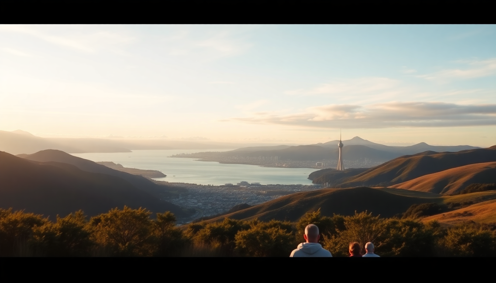

10-Day New Zealand Itinerary: Auckland, Rotorua, Queenstown & Milford Sound

I spent ten days bouncing between Auckland’s volcanic skyline, Rotorua’s sulfur vents, Queenstown’s lakefront adrenaline, and the sheer granite walls of Milford Sound. It’s a tight schedule—you’re basically doing a one-way loop with a flight in the middle—but it works if you move fast and book ahead. Here’s exactly how I did it, where I stayed, and what I’d skip next time.
How should you split your 10 days across the North and South Islands?
Start with three nights in Auckland, two in Rotorua, then fly to Queenstown for four nights (using it as a base for Milford Sound). That leaves one night in Te Anau or back in Queenstown before flying out.
My actual split was: Auckland (3 nights), Rotorua (2), Queenstown (4), Milford Sound day trip from Te Anau (1 night). The flight from Rotorua to Queenstown via Air New Zealand was about two hours and saved me two full days of driving.
- Auckland — Arrive, shake off jet lag, explore the city core
- Rotorua — Geothermal parks and Maori culture, 3.5-hour drive from Auckland
- Queenstown — Adventure hub and launchpad for Milford Sound
- Te Anau — Small town stopover before the Milford Road; worth one night
What are the best things to do in Auckland without wasting time?
Auckland feels spread out, but the highlights cluster near the waterfront and a few volcanic cones. I skipped the Sky Tower (overpriced view) and spent my first morning walking up Mount Eden—the crater rim gives you a 360° of the city and both harbors for free.
For food, Depot Eatery on Federal Street does excellent sliders and Bluff oysters. I grabbed a table at the counter right when they opened at 7 a.m. for breakfast. The Auckland Fish Market is a solid backup if Depot is packed.
- Walk Mount Eden at sunrise (free, 30-minute climb)
- Ferry to Waiheke Island for a half-day of wineries—Mudbrick Vineyard has a killer tasting platter
- Stroll Viaduct Harbour in the evening for drinks at The Crab Shack
- Skip the Sky Tower unless you’re doing the bungee jump off it
Is Rotorua worth the drive from Auckland, or should you skip it?
Rotorua smells like rotten eggs. That’s the geothermal reality. But the thermal parks are genuinely unique, and the Maori cultural experiences are the real deal, not tourist schtick. I drove from Auckland in about 3 hours and 15 minutes via State Highway 1, stopping for a pie at Bakehouse Cafe in Tirau (worth the detour for the corrugated-iron sheep building alone).
I booked a guided tour of Te Puia—you get the Pohutu Geyser, mud pools, and a kiwi house. The Whakarewarewa Living Maori Village is smaller but more authentic; I’d choose it over the larger commercial shows. Skip the Polynesian Spa if you’re on a budget—it’s nice but not 40 NZD nice.
- Te Puia — Geyser and kiwi bird enclosure in one ticket
- Whakarewarewa Village — Actual families live here; the guided tour covers history and cooking in hot pools
- Redwoods Treewalk — Suspension bridges through giant sequoias; do it at dusk with lanterns
- Skyline Rotorua — Gondola and luge; good for a rainy afternoon but crowded
How do you get from Rotorua to Queenstown efficiently?
Fly. I booked a direct Air New Zealand flight from Rotorua Airport (ROT) to Queenstown (ZQN) for about 180 NZD. The flight takes 2 hours and 10 minutes. Driving would take you 20 hours including the ferry across Cook Strait—don’t do that on a 10-day trip.
If you’re set on a road trip, you could drive Rotorua to Wellington (6 hours), take the Interislander ferry to Picton (3.5 hours), then drive to Queenstown (8 hours). That’s two full days. I’d rather spend those days in Queenstown.
What’s the right amount of time in Queenstown for a first-timer?
Four nights in Queenstown felt right. The town itself is small—you can walk the lakefront in 20 minutes—but the activities radiate outward. I stayed at The Rees Hotel on the lake edge, which had a kitchenette and a balcony facing the Remarkables. It’s a 10-minute walk to the town center, which meant quiet nights.
For adrenaline, I did the Shotover Jet (fun but brief—25 minutes of spinning) and the Nevis Bungy (134 meters, genuinely terrifying). The bungy is a half-day commitment because of the shuttle from town. If you only have one day for adventure, book the Queenstown Hill Walk (free, 2 hours, panoramic views) and save the money for Milford Sound.
- The Rees Hotel — Lakeview rooms with kitchenettes; book directly for a better rate
- Fergburger — Overhyped but the line moves fast; get the “Sweet Julie” with beetroot
- Queenstown Gardens — Free walk, disc golf, and a peaceful break from tourists
- Arrowtown — 20-minute drive; historic gold-mining town with better coffee than Queenstown
Should you take a Milford Sound cruise or a flight?
Both. But if you can only do one, take the cruise. I drove from Queenstown to Milford Sound via the Milford Road (State Highway 94) in about 4 hours, with stops at Mirror Lakes and The Chasm. The road is narrow and winding—allow extra time for tour buses and one-lane bridges.
I booked the Southern Discoveries cruise (smaller boat, fewer people) and it ran about 1 hour 45 minutes. The waterfalls, especially Stirling Falls, soak you even in the dry season. Bring a rain jacket, not an umbrella. The sound is basically a fjord, so the weather changes every 20 minutes.
- Milford Road — Stop at Mirror Lakes before 9 a.m. for still reflections
- Southern Discoveries — Includes a nature guide and underwater observatory
- RealNZ — Another reputable operator; their coach-cruise combo saves driving stress
- Kayak Milford — Paddling under the cliffs is quieter than the boats, but you need good weather
FAQ
Do I need a rental car for this itinerary? Yes, for the North Island leg (Auckland to Rotorua) and for getting around Queenstown. I rented from Apex Car Rentals in Auckland—they’re cheap and let you drop off in Queenstown for a fee. For Milford Sound, consider the bus unless you love driving mountain roads.
What’s the best time of year for this route? I went in late November (late spring). The weather was mild, crowds were manageable, and the Milford Road was open without snow chains. Summer (December–February) is peak tourist season—book everything three months out. Winter (June–August) means shorter days and possible road closures.
Can I add a stop like Wanaka or Christchurch? Not without cutting something else. Wanaka is an hour from Queenstown and worth a day if you skip Rotorua. Christchurch is a 6-hour drive from Queenstown—I’d save it for a South Island-only trip. Stick to this loop for 10 days.
Conclusion
- Fly from Rotorua to Queenstown to save two days of driving
- Book Milford Sound cruise and accommodation three months ahead in peak season
- Skip the Sky Tower and Polynesian Spa; prioritize Te Puia and the Milford Road
- Stay at The Rees in Queenstown for quiet lake views within walking distance of town
- Pack a rain jacket and sturdy walking shoes—New Zealand weather changes hourly